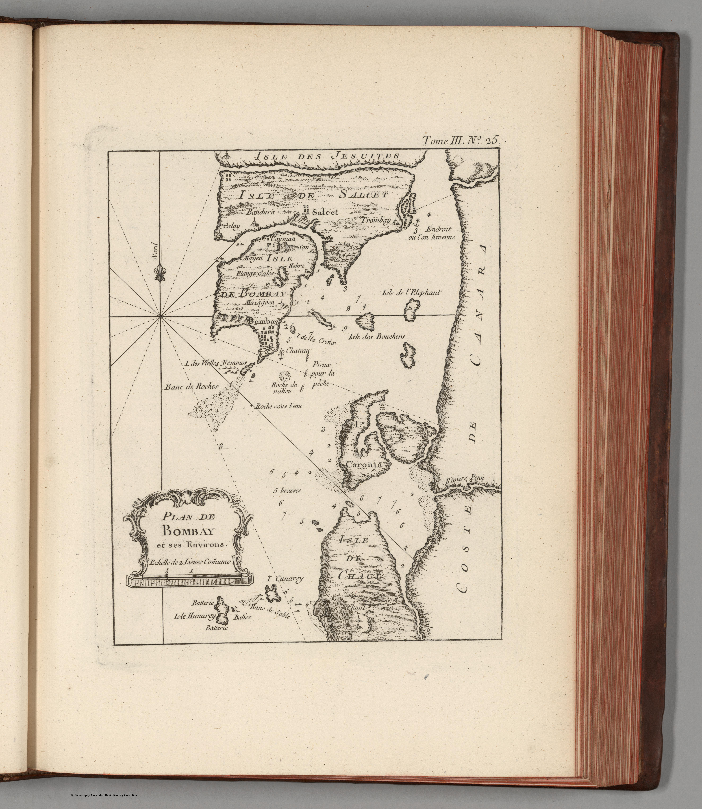
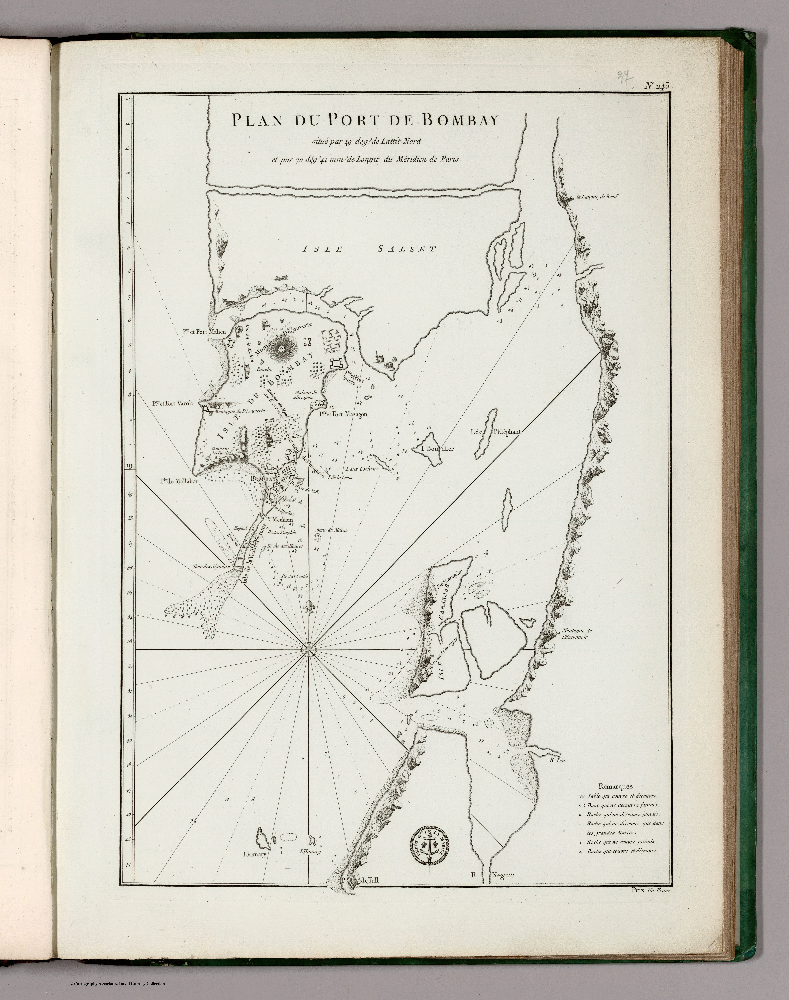
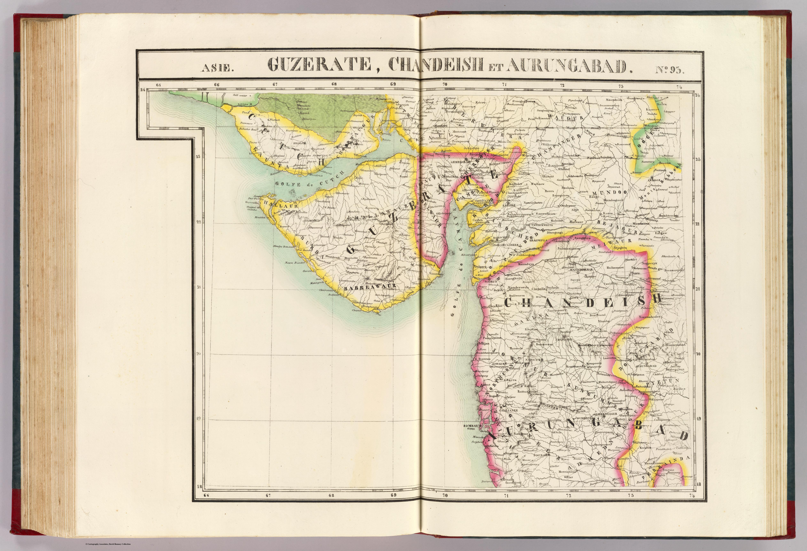
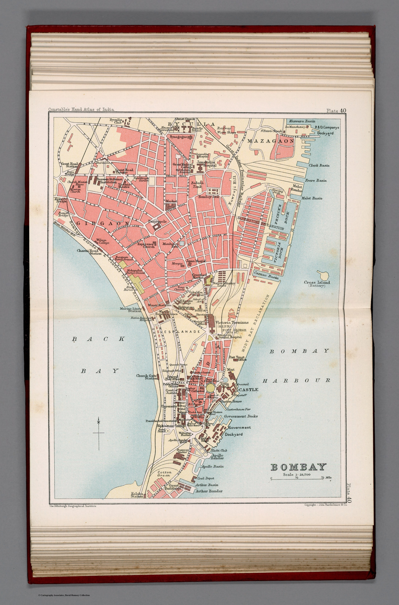
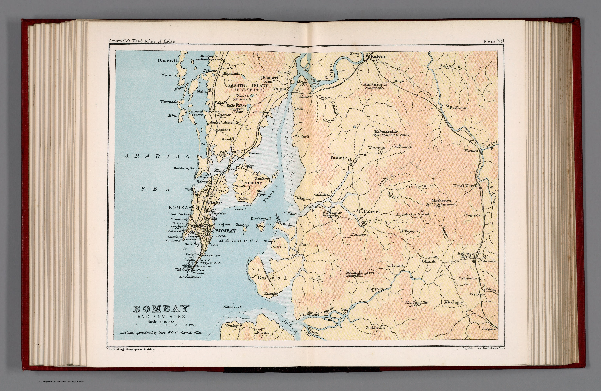
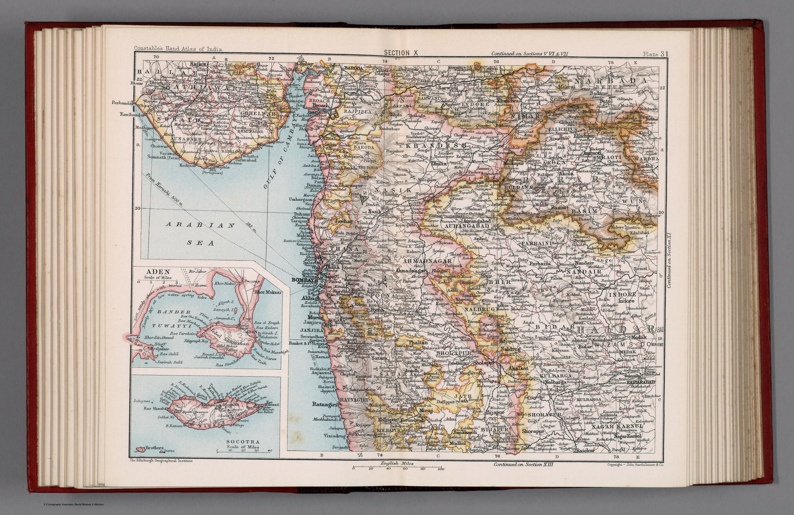

Room 04
Home Ground Bombay and Deccan
The gaze tightens from a subcontinent to a region. Harbour plans, district sheets and mission maps render the Bombay Presidency and the Deccan at working scale — the colonial eye no longer surveying an empire in the abstract but administering a particular ground, street by street and taluka by taluka. It is also the collection’s most deliberately situated room: the foreign archive viewed from the collector’s own home ground.

Plan de Bombay1764
Plan du Port de Bombay1810 Bejapoor. Asie 1021827
Bejapoor. Asie 1021827
Guzerate, Chandeish et Aurungabad. Asie 931827 Southern India1848
Southern India1848 India III Bombay1856
India III Bombay1856 South Mahratta1859
South Mahratta1859
Bombay — city plan1893
Bombay and Environs1893
Bombay and Berar1893